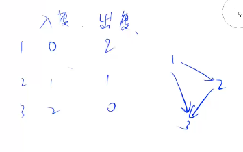

Topological sort
Definition¶
- DAG
- No cycle: if no cycle -> has to have a Topological Sort order.
in degree and out degree¶

Proof on DAG w/o cycle has to have a node with in degree of 0¶
- Prove by contradiction
- assume there is a DAG w/o cycle where all the nodes' in degree is greater than 0.
- because each node has an in-node, we can follow the in node to expand backward, until we reach n nodes. However, for nth node, it also has a in node, which expand to n+1 th node. However, we only have n nodes, so that there is at least one nodes mentioned are the same. If two nodes are the same, then it has a cycle (if a path has two same nodes, then it's cycle for sure).
848. 有向图的拓扑序列¶
#include <bits/stdc++.h>
using namespace std;
int main() {
int n, m;
cin >> n >> m;
int degree[n + 1];
vector<int> graph[n + 1];
vector<int> order;
memset(degree, 0, sizeof degree);
int x, y;
queue<int> q;
for (int i = 0; i < m; ++i) {
cin >> x >> y;
graph[x].push_back(y);
degree[y]++;
}
for (int i = 1; i <= n; ++i)
if (degree[i] == 0) q.push(i);
while (!q.empty()) {
int t = q.front();
order.push_back(t);
q.pop();
for (int i = 0; i < graph[t].size(); ++i) {
if (--degree[graph[t][i]] == 0) q.push(graph[t][i]);
}
}
if (order.size() == n) {
for (int i : order)
cout << i << " ";
} else {
cout << -1;
}
}